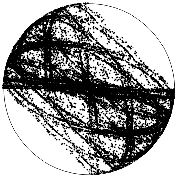

Tópicos de Probabilidade I
Propriedades estatísticas para certos sistemas dinâmicos
O objetivo principal deste curso é o estudo de tópicos recentes de teoria ergódica sobre leis limites (i.e. o princípio de grandes desvios, o teorema do limite central, decaimento de correlações) para certos sistemas dinâmicos com alguma hiperbolicidade. As ferramentas principais usadas para obter tais propriedades estatísticas são o operador de transição de Markov ou o operador de transferência de Ruelle, mais precisamente, o comportamento assintótico das suas potências em espaços apropriados de observáveis.

Pré-requisitos
Introdução aos Sistemas Dinâmicos; Teoria Ergódica; Análise Funcional; Teoria da Probabilidade I.
Professor
Nome: Silvius Klein
Sala: L749
Email: silviusk [arroba] puc-rio [ponto] br
Aulas
Hora: segundas e quartas das 15 às 17
Sala: L856
As notas de aula serão atualizadas semanalmente.
Bibliografia
[AFLV] José F. Alves, Jorge M. Freitas, Stefano Luzzatto, Sandro Vaienti, From rates of mixing to recurrence times via large deviations, Advances in Mathematics 228, 2011, disponível aqui.
[CDK] Ao Cai, Pedro Duarte, Silvius Klein, Statistical properties for mixing Markov processes with applications to dynamical systems, Preprint 2024, disponível aqui.
[DeKiLiv] Mark Demers, Niloofar Kiamari, Carlangelo Liverani, Transfer operators in hyperbolic dynamics: an introduction, 33º CBM, Publicações Matemáticas do IMPA, 2021, disponível aqui.
[DK-CBM] Pedro Duarte, Silvius Klein, Continuity of the Lyapunov exponents of linear cocycles, 31º CBM, Publicações Matemáticas do IMPA, 2017, disponível aqui.
[HH] Hubert Hennion, Loïc Hervé, Limit Theorems for Markov Chains and Stochastic Properties of Dynamical Systems by Quasi-Compactness, Springer 2001, disponível aqui.
[Viana] Marcelo Viana, Lectures on Lyapunov exponents, Cambridge University Press, 2014.
Avaliação
Seminários sobre tópicos do curso escolhidos pelo professor.
Tópicos principais do curso:
- Leis limites para processos aleatórios aditivos
- Sistemas dinâmicos estocásticos e o operador de Markov [CDK]
- Leis limites para processos aleatórios multiplicativos [DK-CBM, HH, Viana]
- Leis limites para translações aleatórias no toro [CDK]
- O operador de transferência de Ruelle [AFLV, HH]
- Mapas uniformemente expansores e outros tipos de sistemas (predominantemente) hiperbólicos [AFLV, DeKiLiv, CDK]
- Neste capítulo introdutório revisamos alguns tópicos de probabilidades, como a lei dos grandes números, o princípio dos grandes desvios e o teorema do limite central para somas de variáveis aleatórias i.i.d. reais.
- Neste capítulo introduzimos o conceito de sistema dinâmico estocástico e o operador de Markov associado. Apresentamos um resultado recente (veja [CDK]) do tipo estimativa de grandes desvios para sistemas de Markov fortemente misturadores e um teorema central do limite por Gordin e Lifshits no mesmo cenário. Esses conceitos e resultados abstratos serão aplicados, nos próximos capítulos, para vários modelos concretos de sistemas dinâmicos.
- Neste capítulo consideramos produtos de matrizes aleatórias i.i.d. Apresentamos os resultados análogos aos do primeiro capítulo para tais processos multiplicativos, ou seja o teorema de Furstenberg e Kesten e alguns teoremas de Le Page (sob hipóteses genéricas). Introduzimos e estudamos o operador de Markov correspondente a tais processos.
- Neste capítulo consideramos caminhos aleatórios no toro, determinados por uma medida de probabilidade satisfazendo uma propriedade de mixing. Esses objetos podem ser modelados por um produto torcido dado por um shift de Bernoulli na base e uma translação na fibra. Derivamos leis limites para tais sistemas usando os resultados abstratos do Capítulo 2.
- Neste capítulo apresentamos um resultado abstrato (veja [AFLV]) relacionando decaimento de correlações com a disponibilidade de grandes desvios para alguns tipos gerais de sistemas dinâmicos. Além disso, introduzimos o operador de transferência e apresentamos um critério garantindo o decaimento de correlações de determinado tipo. Ademais, apresentamos conceitos e resultados fundamentais de análise funcional amplamente usados em teoria ergódica (i.e., operadores quase compactos e o teorema de Ionescu-Tulcea e Marinescu).
- Neste capítulo final consideramos aplicações dos resultados abstratos dos capítulos 2 e 5 para mapas expansores e para vários outros sistemas dinâmicos (se o tempo permitir).